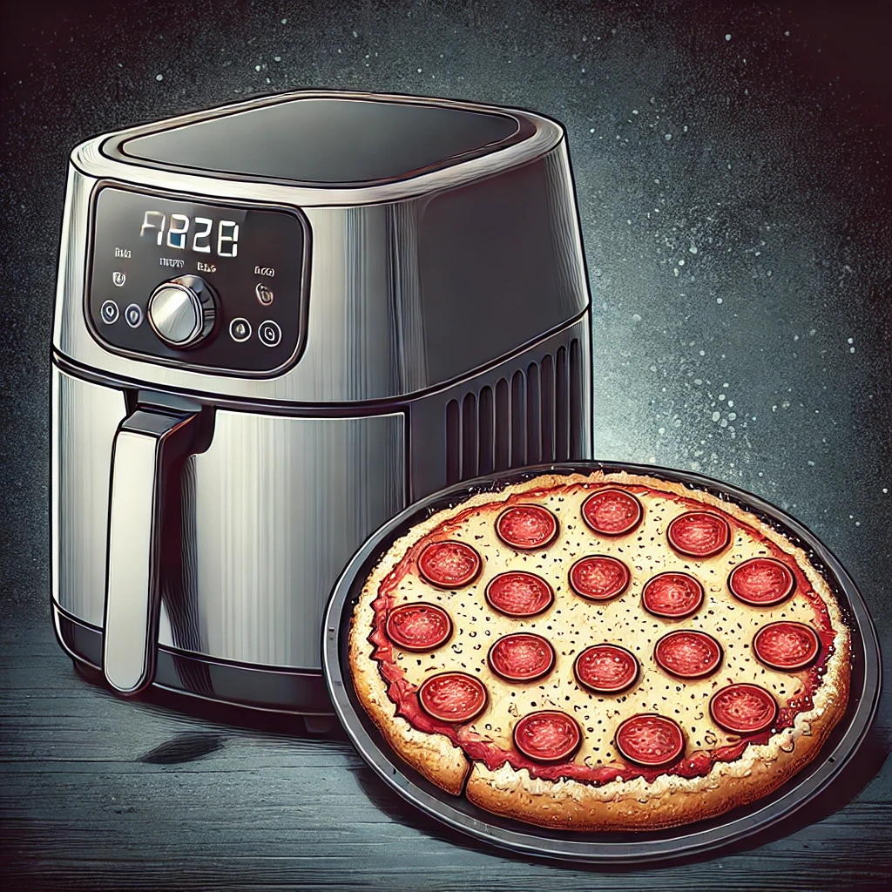

Best Air Fryer for Frozen Foods
Air fryers have revolutionized the way we cook frozen foods, making it easier and quicker to enjoy our favorite snacks and meals with less oil. Whether you're preparing frozen fries, chicken nuggets, or vegetables, the right air fryer can make all the difference. Here are some of the best air fryers for cooking frozen foods, selected for their efficiency, capacity, and ease of use.
1. Ninja Foodi 8-Quart 9-in-1 Deluxe XL Pressure Cooker & Air Fryer
Key Features:
- 9-in-1 Functionality: Pressure cook, air fry, steam, slow cook, sear/sauté, bake/roast, broil, dehydrate, and make yogurt.
- TenderCrisp Technology: Combines pressure cooking and air frying for perfect textures.
- Large Capacity: 8-quart pot and a 5-quart Cook & Crisp Plate.
Why It's Great for Frozen Foods:
The Ninja Foodi’s TenderCrisp Technology ensures your frozen foods are cooked evenly and quickly, resulting in a crispy exterior and tender interior. Its large capacity is ideal for cooking multiple servings.
2. COSORI Air Fryer Max XL 5.8-Quart
Key Features:
- 5.8-Quart Capacity: Ideal for large portions.
- 11 Preset Functions: Includes a preset for frozen foods.
- User-Friendly Interface: Digital touch screen with intuitive controls.
Why It's Great for Frozen Foods:
The COSORI Air Fryer Max XL’s preset functions make it easy to cook a variety of frozen foods to perfection. Its large capacity allows you to prepare enough food for the whole family.
3. Instant Vortex Plus 6-in-1 Air Fryer 6-Quart
Key Features:
- 6-in-1 Functionality: Air fry, broil, roast, dehydrate, bake, and reheat.
- EvenCrisp Technology: Ensures perfect crispiness every time.
- Large Capacity: Fits a variety of foods, making it great for frozen items.
Why It's Great for Frozen Foods:
The Instant Vortex Plus’s EvenCrisp Technology ensures that your frozen foods come out crispy and evenly cooked. Its multiple functions add versatility to your cooking options.
4. GoWISE USA GW22956 7-Quart Electric Air Fryer
Key Features:
- 7-Quart Capacity: Suitable for large meals and multiple servings.
- 8 Cooking Presets: Includes a frozen food preset.
- Rapid Air Technology: Cooks food evenly and quickly.
Why It's Great for Frozen Foods:
The GoWISE USA 7-Quart Air Fryer’s large capacity and preset for frozen foods make it easy to cook large batches quickly and evenly. Its rapid air technology ensures consistent results.
5. Philips Premium Airfryer XXL
Key Features:
- Fat Removal Technology: Reduces and captures excess fat.
- Rapid Air Technology: Ensures even cooking and crispiness.
- Extra Large Capacity: Fits a whole meal, including large portions.
Why It's Great for Frozen Foods:
The Philips Premium Airfryer XXL’s rapid air technology and large capacity ensure that your frozen foods are cooked perfectly every time. Its fat removal technology helps make your meals healthier.
Conclusion
Cooking frozen foods can be quick and easy with the right air fryer. The models listed above offer excellent features and capacities to ensure your frozen foods are cooked to perfection. Whether you’re preparing snacks or full meals, these air fryers will help you achieve delicious results with minimal effort.